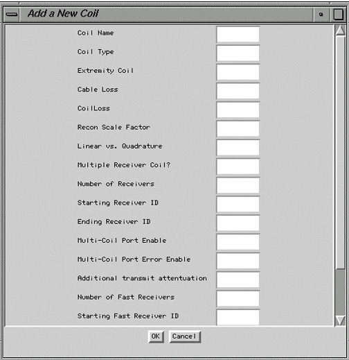

| NOTE: | Use the [Delete] key to edit text. When you press the [Backspace] key, it will start deleting from the end of the field instead of from where the cursor is located. |
Illustration 5: ADD NEW COIL SCREEN (TYPICAL)

Information of othe components of Configuration File Manager are accessed in .